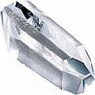

Outros riscos à saúde relacionados às práticas da odontologia convencional
Muitos riscos e desvantagens relacionados à prática da odontologia e cuidados dentários convencionais já estão sendo debatidos em várias sub-seções da seção Convencional de CuraDente, como Tratamento de canal radicular, Obturações dentárias e Pontes e coroas. A presente sub-seção é devotada a perigos adicionais associados com várias práticas de dentistas convencionais, assim no que se segue, alguns desses “efeitos colaterais” (que podem ser realmente sérios – até incluem morte) serão apresentados.